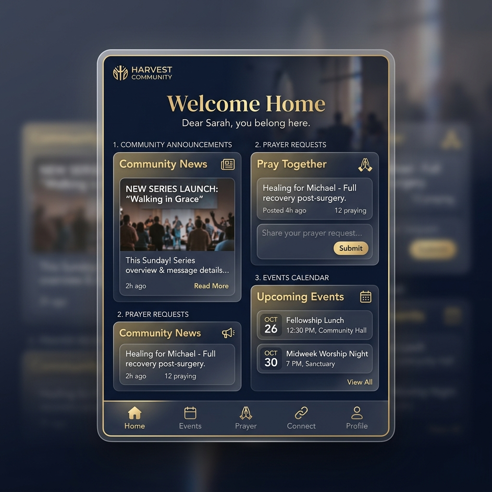

Grace Connect helps churches build a blessed digital home for members, prayer, events, giving, Bible study, attendance, announcements, and community.

A unified platform that serves everyone in your congregation.
See your church family, communicate with members, approve access, and keep ministry organized. Focus on the spiritual health of your congregation while we handle the digital logistics.
Manage church events, track attendance, handle digital giving securely, and review member applications. Everything you need to keep the church running smoothly in one dashboard.
Stay connected to your church family, prayer requests, announcements, Bible study, events, and ministry updates. Never miss a moment of fellowship.
Create private spaces for youth, women's, and men's ministries. Coordinate volunteers, schedule meetings, and share resources specifically tailored to each group's mission.
Powerful tools designed specifically for modern ministry.
Easy onboarding for your church with secure verification.
Safely approve or decline members to protect your community.
Push critical updates directly to your congregation's phones.
Share and pray for each other's needs in real-time.
RSVP, schedule, and manage church-wide or group events.
Secure, transparent, and easy digital tithes and offerings.
Share reading plans and study notes with study groups.
Track service attendance and visitor follow-ups easily.
A private social space to share testimonies and joy.
Organize volunteers and specific ministry teams.
Gain insights and oversee all church digital activities.
Platform integrity maintained through manual church verification.
Getting started is simple and secure.
Fill out the registration form with your church's verified details.
Our team verifies the church to maintain a safe platform.
An email is sent when the church is officially active.
Congregation members search for the church to request access.
Once approved by the admin, members enjoy full access.
Only official Pastors, Senior Leaders, or designated Church Administrators should register a church. We verify leadership to ensure the digital space is secure.
No. To protect the integrity of church communities, members can only join churches that have been officially registered and approved on Grace Connect.
Once registered, a church goes into a 'Pending' status. Our moderation team or automated system reviews the submission. Once verified, the status is updated to 'Approved'.
The Pastor/Admin will receive a confirmation email. At that point, the church becomes visible in the search directory, allowing members to sign up and request to join.
For the New Testament Church of God denomination, we standardize the public names (e.g., 'Bull Bay NTCOG') to ensure a clean, consistent, and easily searchable directory for all members globally.
No! Grace Connect is built for all Christian denominations and independent churches looking to foster a closer digital community.
Yes. The admin dashboard provides full tools to approve/remove members, send push notifications, manage the calendar, and moderate the community feed.